Git
- distributed version control system (VCS)
- a free and open source
- handle everything from small to very large projects
- speed and efficiency
Why git?
Allows groups of people to work on the same documents (often code) at the same time, and without stepping on each other's toes.
Git Servers
There are lot of git servers which supports git. Among them, popular one is the github.com
GitHub is a website where copies of Git repositories can be uploaded.
It is a Git repository hosting service, which offers all of the distributed revision control and source code management (SCM) functionality of Git as well as adding its own features. Unlike Git, which is strictly a command-line tool, GitHub provides a web-based graphical interface and desktop as well as mobile integration. It also provides access control and several collaboration features such as wikis, task management, bug tracking and other features that can be helpful for projects. It allows collaboration with other people on projects. It does that by providing a centralized location to share the repository, a web-based interface to view it, and features like forking, pull requests distributed revision control, issues, and wikis.
How to get started with git?
You need to go to the link http://www.github.com
Click on the Sign Up button.
The page shown below appears. Fill up the necessary information and then proceed. 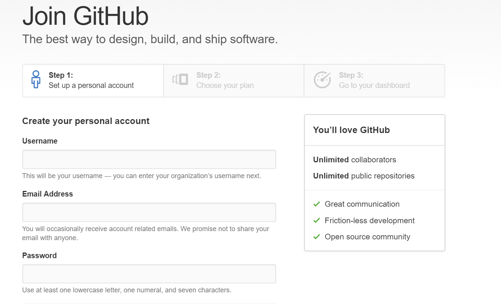
Once you are done with signing up the GitHub account. We can login into through your username and password that you just created. You will see the following page like this. 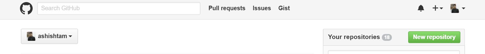
You can click on the New Repository button and create the repository to get started your project into the GitHub.
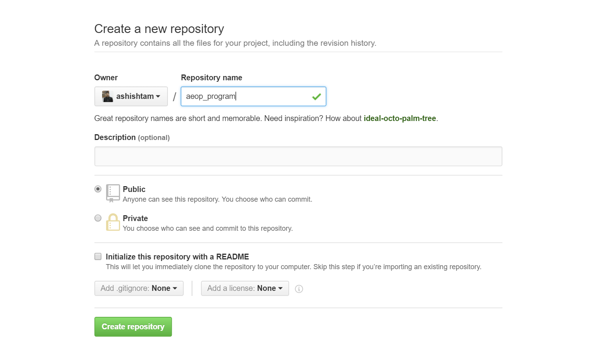
After you create the new repository, you will get the following page.
I created the repository named aeop_program.
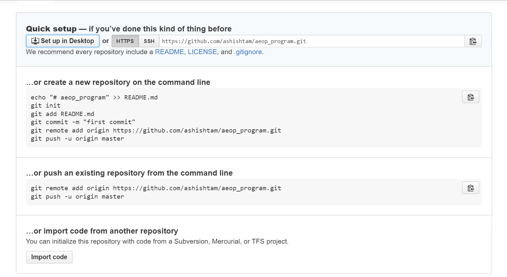
Installing git into your computer
For windows,
Go to the below link and then download and install git-scm
https://git-for-windows.github.io/
You are on your desired folder to create a git repository. You just need to right click on the white part and then click on “Git Bash Here”.
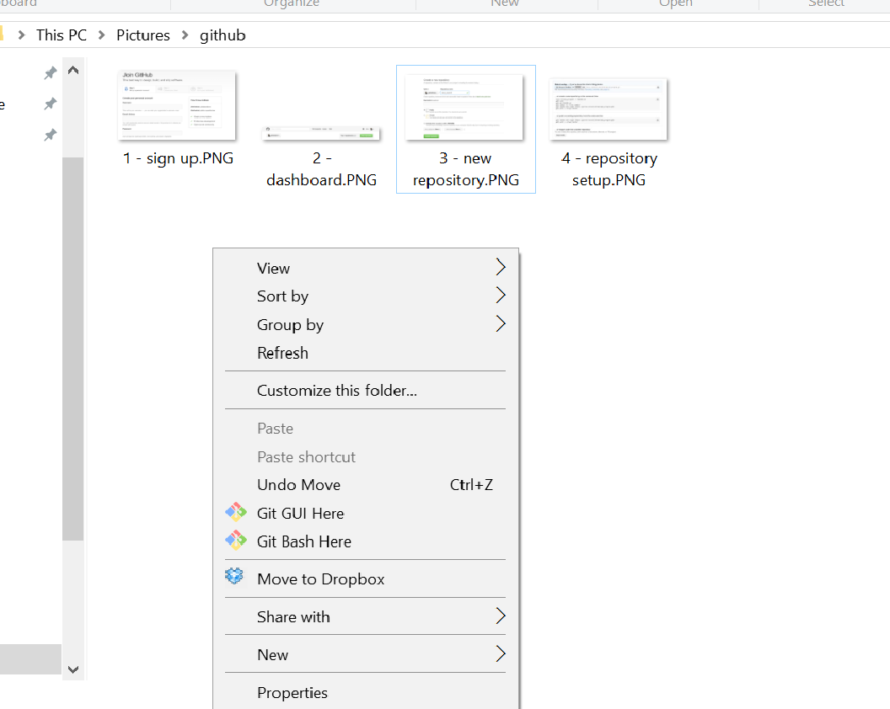
For linux,
Open the terminal and install git as,
$ sudo apt-get install git
For Mac,
It comes with pre-install git and can be accessed through your terminal. To open the terminal, you need to Applications->Utilities folder.
If it is not installed then, you can download it from the following link as,
https://code.google.com/archive/p/git-osx-installer/downloads
Configuring your git
This configuration is the one-time configuration. You need to config your name and e-mail so that git can keep track of the person who commits the files.
$ git config --global user.email "you@example.com"
$ git config --global user.name "Your Name"
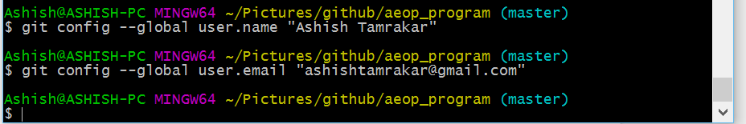
To check whether your configuration was set up properly or not.
$ git config --all
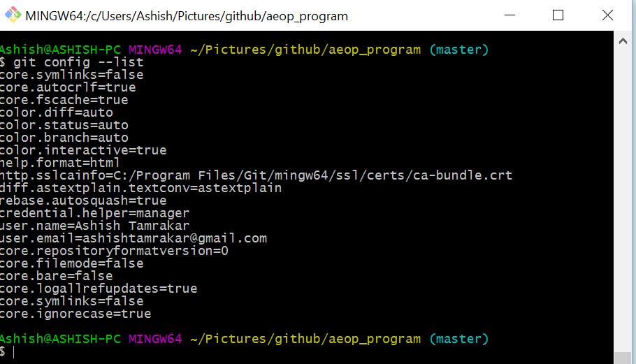
Create a local git folder and then committing your files/folders
Initializing a git repository
We create a git repository on our local machine.
$ git init

A new hidden folder .git will now be created in your initialized directory. Git stores its database and configuration information in that folder to keep track of your project.
Checking the status of the repository
$ git status
If you file has not been added, then it will be taken as untracked files.
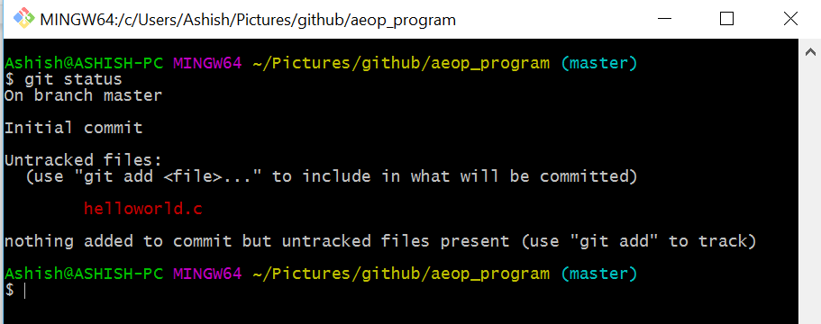
Adding a files/folders in the repository
In order to add the files and/or folders, you use the following command as,
$ git add helloworld.c
If you want to add all the files/folders then,
$ git add *
Once you have added your files, your files are ready to be committed.
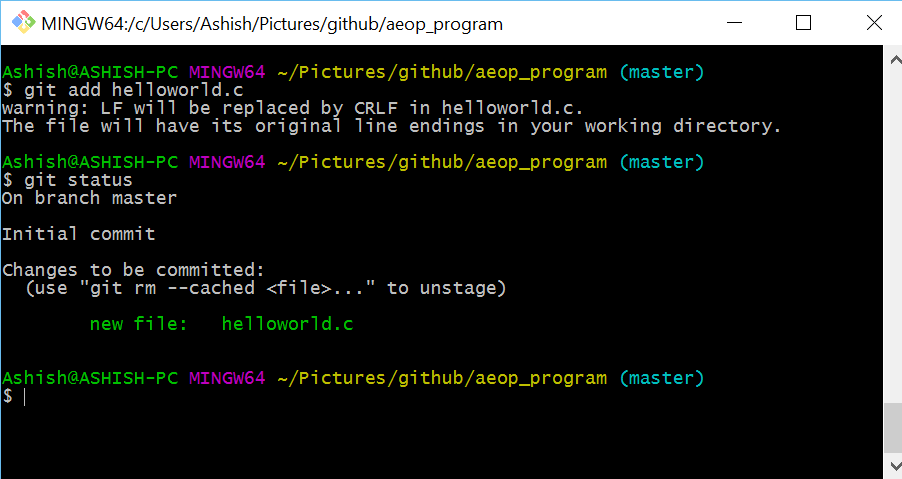
Your first commit
To commit the staged files, you need to provide the message in commit as,
$ git commit -m "My First Commit"
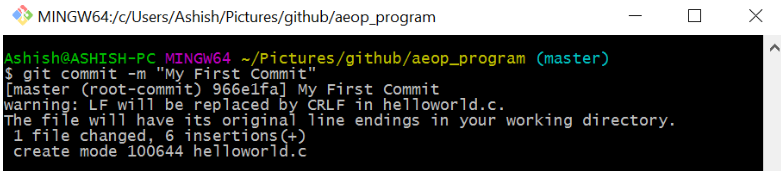
You just made your first commit. However, your repository is just in your local machine right now. So, in order to add your files in the repository that you created in your GitHub account, you connect your git folder to the remote repository in www.github.com
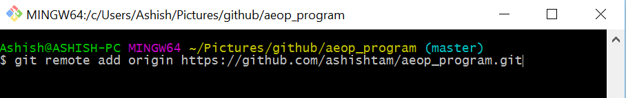
Push your content to the remote repository
In order to push your remote repository, you can execute the following command as,
It prompts for your GitHub account username and password. Once you entered your username and password, it pushes your committed files into the GitHub account.
Clone your git repository into your system
You need to click on the green button Clone or download which pops the “Clone with HTTPS” window. You can click on the button beside the link given to copy the HTTPS link.
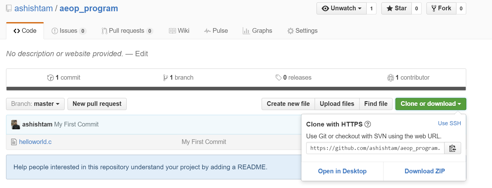
Then similar to the previous process, right click on the folder you like to clone, click on Git Bash Here which opens the terminal window.
$ git clone <Paste your https link that you copied>
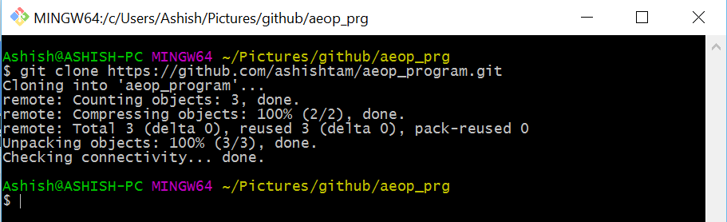
Keep your repository up to date with the remote repository (Pull)
You need to pull the files that your team member might have pushed to the repository which you might need to link up with. So in order to do that, you need to pull the files and folders from the repository.
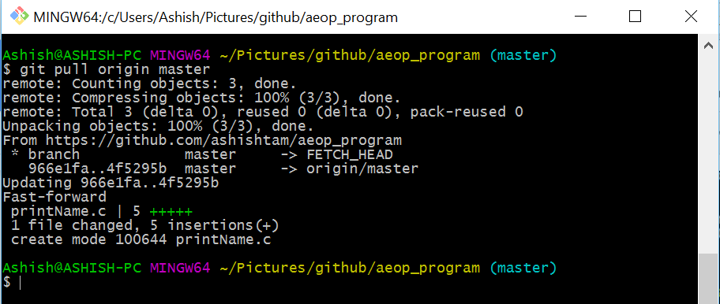